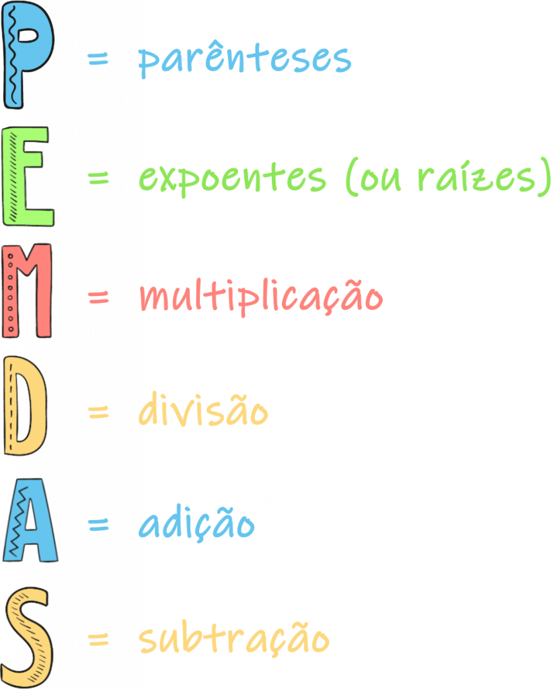

O que é álgebra?
Álgebra é o ramo da Matemática que generaliza a aritmética. Isso significa que os conceitos e operações provenientes da aritmética (adição, subtração, multiplicação, divisão etc.) serão testados e sua eficácia será comprovada para todos os números pertencentes a determinados conjuntos numéricos. Nos estudos de álgebra, letras são utilizadas para representar números. Essas letras tanto podem representar números desconhecidos quanto um número qualquer pertencente a um conjunto numérico. Se x é um número par, por exemplo, então x pode ser 2, 4, 6, 8, 10,.... Dessa maneira, x é um número qualquer pertencente ao conjunto dos números pares e fica evidente o tipo de número que x é: um múltiplo de 2.
Como resolver os cálculos da álgebra?
A soma ou a subtração algébrica é feita somando-se ou subtraindo-se os coeficientes dos termos semelhantes e repetindo a parte literal. É importante observar que o sinal de menos na frente dos parênteses inverte todos os sinais de dentro dos parênteses.
Ordem das Operações:
Conheça a ordem das operações. Um dos maiores desafios ao resolver uma equação algébrica é saber por onde começar. Felizmente, há uma ordem específica para o processo: faça primeiro as operações entre parênteses, avance para os expoentes, multiplique, divida, soma e finalmente subtraia. Uma ferramenta útil ao se lembrar dessa ordem é a sigla PEMDAS. Para recapitular, a sequência será:
- Parênteses
- Expoentes
- Multiplicação
- Divisão
- Adição
- Subtração
Classificações da álgebra:
- Álgebra Computacional
- Álgebra abstrata
- Álgebra elementar
- Álgebra Computacional
Álgebra computacional é um ramo da matemática que lida com a aplicação de técnicas e algoritmos computacionais para resolver problemas relacionados à álgebra, manipulação simbólica e cálculos matemáticos. Ela envolve a utilização de computadores e software especializado para realizar cálculos simbólicos e manipular expressões matemáticas de forma algébrica. A álgebra computacional permite a automatização de cálculos e a resolução de problemas matemáticos complexos que envolvem manipulação simbólica, como simplificação de expressões, fatoração, resolução de equações, cálculo de limites, derivação e integração simbólica, entre outros.
- Álgebra abstrata
Álgebra abstrata, também conhecida como álgebra moderna ou teoria dos grupos, é um ramo da matemática que estuda as estruturas algébricas de forma abstrata, ou seja, sem se ater a aplicações específicas. Ela busca compreender as propriedades e relações entre conjuntos de elementos e as operações que podem ser realizadas nesses conjuntos.
- Álgebra elementar
Álgebra elementar é a parte da álgebra que trata dos conceitos e operações fundamentais envolvendo números reais e variáveis. É um ramo da matemática que é ensinado no nível escolar básico, normalmente no ensino fundamental e médio.A álgebra elementar é essencial para a compreensão de conceitos matemáticos mais avançados, como álgebra linear, cálculo e outras áreas da matemática. Ela fornece as bases para manipular expressões algébricas, resolver problemas do mundo real e desenvolver habilidades analíticas. Na álgebra elementar, os principais tópicos abordados incluem: Operações básicas: Adição, subtração, multiplicação e divisão de números reais. Essas operações são aplicadas tanto a números concretos quanto a variáveis. Expressões algébricas: Combinação de números e variáveis usando operações aritméticas. Expressões algébricas podem envolver termos constantes (números fixos), termos variáveis (representados por letras, como x ou y) e coeficientes (números que multiplicam as variáveis).
Equação do 1° Grau:
A ordem de operações é importante na álgebra porque o mero ato de se equivocar em uma das partes pode ocasionalmente afetar o resultado obtido. O valor desconhecido é chamado de incógnita que significa "termo a determinar". As equações do 1º grau podem apresentar uma ou mais incógnitas. As incógnitas são expressas por uma letra qualquer, sendo que as mais utilizadas são x, y, z. Nas equações do primeiro grau, o expoente das incógnitas é sempre igual a 1.
Equação do 2° Grau:
A ordem de operações é importante na álgebra porque o mero ato de se equivocar em uma das partes pode ocasionalmente afetar o resultado obtido. Se você estiver lidando com o problema 8 + 2 × 5, por exemplo, por um lado poderia somar 2 + 8 em primeiro lugar, obtendo 10 × 5 = 50, e por outro lado multiplicar 2 × 5 em primeiro lugar, obtendo 8 + 10 = 18. Apenas a segunda resposta está correta. O valor desconhecido é chamado de incógnita que significa "termo a determinar". As equações do 1º grau podem apresentar uma ou mais incógnitas. As incógnitas são expressas por uma letra qualquer, sendo que as mais utilizadas são x, y, z. Nas equações do primeiro grau, o expoente das incógnitas é sempre igual a 1.
Regra de Três:
A regra de três é um procedimento usado para a resolução de problemas que envolvem grandezas que são proporcionais. Pelo fato de ter uma enorme aplicabilidade, é muito importante saber resolver problemas utilizando essa ferramenta. Portanto, aproveite os exercícios comentados e questões de concursos resolvidas para verificar seus conhecimentos sobre esta matéria. A regra de três, na matemática, é uma forma de se descobrir uma quantidade que tenha para outra conhecida a mesma relação que têm entre si entre outros dois valores numéricos conhecidos. Existem dois tipos de regra de três: simples e composta. A regra de três simples é uma proporção entre duas grandezas, por exemplo: velocidade e tempo, venda e lucro, mão de obra e produção… Se as grandezas forem diretas (aumentando uma, a outra também aumenta, e vive e versa) a proporção é mantida.


